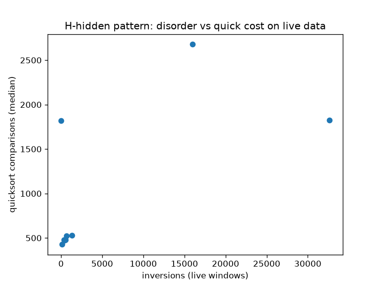

Lang (2006) Ch.2/3/5 reproduced end-to-end on live Yahoo Finance + Wikipedia. All numbers generated, never hand-written.
Text: 20000 chars live | Graph Floyd==Dijkstra: True | MST: 13.0
| window | n | inversions | runs | quick cmp | heap cmp | merge cmp |
|---|---|---|---|---|---|---|
| live_w0 | 64 | 642 | 17 | 522 | 561 | 262 |
| live_w32 | 64 | 141 | 18 | 426 | 587 | 228 |
| live_w64 | 64 | 368 | 17 | 481 | 565 | 278 |
| live_w96 | 64 | 1329 | 18 | 527 | 572 | 293 |
| live_w128 | 64 | 559 | 15 | 479 | 566 | 286 |
| live_w160 | 64 | 414 | 15 | 476 | 580 | 252 |
| sorted256 | 256 | 0 | 1 | 1817 | 3456 | 1024 |
| reversed256 | 256 | 32636 | 5 | 1825 | 3108 | 1026 |
| random256 | 256 | 15973 | 86 | 2678 | 3305 | 1743 |
| pattern | hits | naive | KMP | Horspool | Sunday |
|---|---|---|---|---|---|
| algorithm | 116 | 22417 | 21259 | 3789 | 3827 |
| sort | 2 | 21118 | 21058 | 5861 | 5013 |
| the | 209 | 21840 | 21223 | 7892 | 6816 |
| aaaaab | 0 | 21370 | 21375 | 3594 | 3272 |
| in mathematics and c | 1 | 21624 | 21290 | 2005 | 1777 |

Generated from results/benchmark_results.json. Reproduce: python3 scripts/fetch_live_data.py && python3 scripts/run_benchmarks.py && python3 scripts/make_report.py